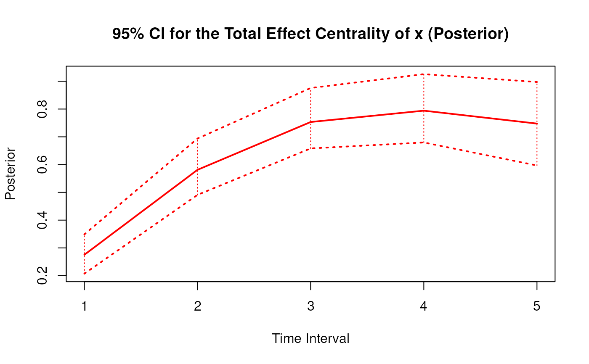
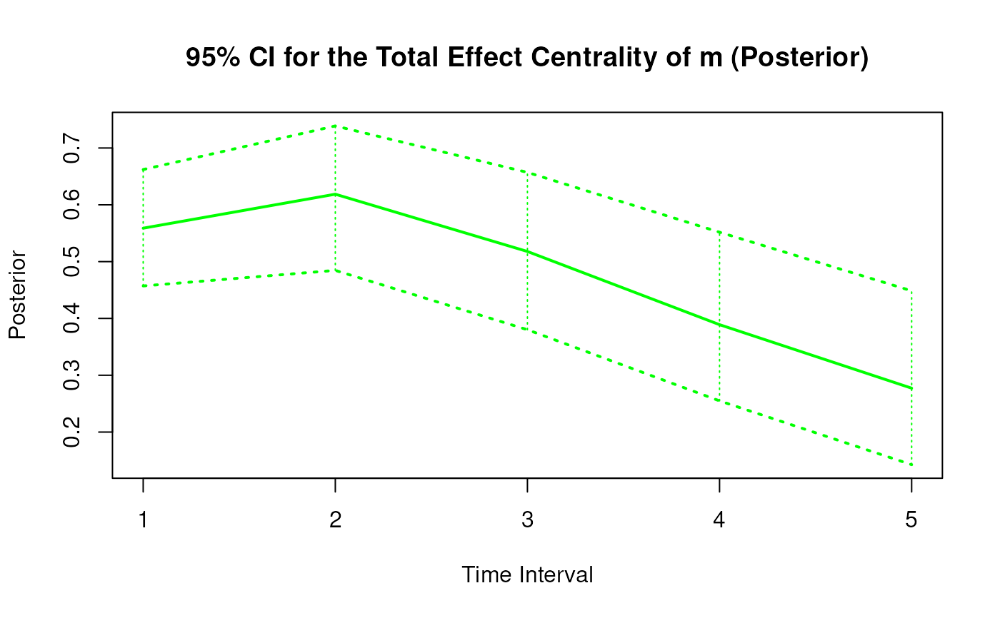
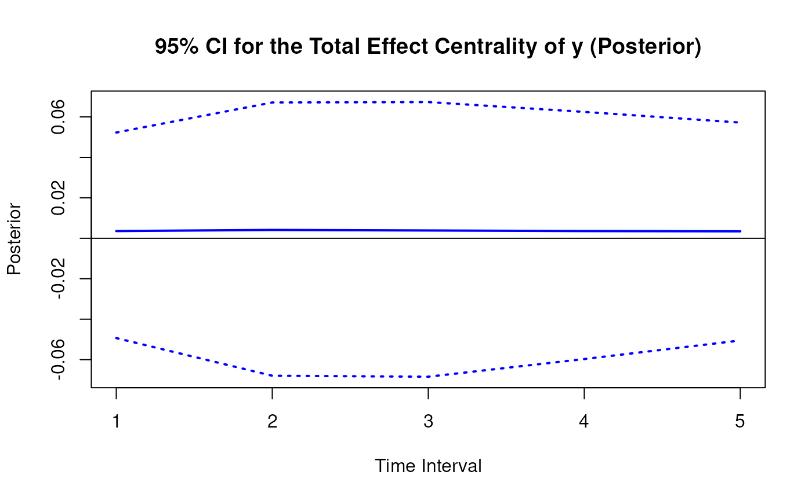

Posterior Distribution of the Standardized Total Effect Centrality Over a Specific Time Interval or a Range of Time Intervals
Source:R/cTMed-posterior-total-central-std.R
PosteriorTotalCentralStd.RdThis function generates a posterior distribution of the standardized total effect centrality over a specific time interval \(\Delta t\) or a range of time intervals using the posterior distribution of the first-order stochastic differential equation model drift matrix \(\boldsymbol{\Phi}\) and process noise covariance matrix \(\boldsymbol{\Sigma}\).
Arguments
- phi
List of numeric matrices. Each element of the list is a sample from the posterior distribution of the drift matrix (\(\boldsymbol{\Phi}\)). Each matrix should have row and column names pertaining to the variables in the system.
- sigma
List of numeric matrices. Each element is a posterior draw of the diffusion covariance matrix.
- delta_t
Numeric. Time interval (\(\Delta t\)).
- ncores
Positive integer. Number of cores to use. If
ncores = NULL, use a single core. Consider using multiple cores when number of replicationsRis a large value.- tol
Numeric. Smallest possible time interval to allow.
Value
Returns an object
of class ctmedmc which is a list with the following elements:
- call
Function call.
- args
Function arguments.
- fun
Function used ("PosteriorTotalCentralStd").
- output
A list of length
length(delta_t).
Each element in the output list has the following elements:
- est
Mean of the posterior distribution of the standardized total effect centrality.
- thetahatstar
Posterior distribution of the standardized total effect centrality measure.
Details
See TotalCentralStd() for more details.
References
Bollen, K. A. (1987). Total, direct, and indirect effects in structural equation models. Sociological Methodology, 17, 37. doi:10.2307/271028
Deboeck, P. R., & Preacher, K. J. (2015). No need to be discrete: A method for continuous time mediation analysis. Structural Equation Modeling: A Multidisciplinary Journal, 23 (1), 61-75. doi:10.1080/10705511.2014.973960
Pesigan, I. J. A., Russell, M. A., & Chow, S.-M. (2025). Inferences and effect sizes for direct, indirect, and total effects in continuous-time mediation models. Psychological Methods. doi:10.1037/met0000779
Ryan, O., & Hamaker, E. L. (2021). Time to intervene: A continuous-time approach to network analysis and centrality. Psychometrika, 87 (1), 214-252. doi:10.1007/s11336-021-09767-0
See also
Other Continuous-Time Mediation Functions:
BootBeta(),
BootBetaStd(),
BootDirectCentral(),
BootDirectCentralStd(),
BootIndirectCentral(),
BootIndirectCentralStd(),
BootMed(),
BootMedStd(),
BootTotalCentral(),
BootTotalCentralStd(),
DeltaBeta(),
DeltaBetaStd(),
DeltaDirectCentral(),
DeltaDirectCentralStd(),
DeltaIndirectCentral(),
DeltaMed(),
DeltaMedStd(),
DeltaTotalCentral(),
DeltaTotalCentralStd(),
Direct(),
DirectCentral(),
DirectCentralStd(),
DirectStd(),
Indirect(),
IndirectCentral(),
IndirectCentralStd(),
IndirectStd(),
MCBeta(),
MCBetaStd(),
MCDirectCentral(),
MCDirectCentralStd(),
MCIndirectCentral(),
MCIndirectCentralStd(),
MCMed(),
MCMedStd(),
MCPhi(),
MCPhiSigma(),
MCTotalCentral(),
MCTotalCentralStd(),
Med(),
MedStd(),
PosteriorBeta(),
PosteriorBetaStd(),
PosteriorDirectCentral(),
PosteriorDirectCentralStd(),
PosteriorIndirectCentral(),
PosteriorIndirectCentralStd(),
PosteriorMed(),
PosteriorMedStd(),
PosteriorTotalCentral(),
Total(),
TotalCentral(),
TotalCentralStd(),
TotalStd(),
Trajectory()
Examples
set.seed(42)
phi <- matrix(
data = c(
-0.357, 0.771, -0.450,
0.000, -0.511, 0.729,
0.000, 0.000, -0.693
),
nrow = 3
)
colnames(phi) <- rownames(phi) <- c("x", "m", "y")
sigma <- matrix(
data = c(
0.24455556, 0.02201587, -0.05004762,
0.02201587, 0.07067800, 0.01539456,
-0.05004762, 0.01539456, 0.07553061
),
nrow = 3
)
colnames(sigma) <- rownames(sigma) <- c("x", "m", "y")
input <- MCPhiSigma(
phi = phi,
sigma = sigma,
vcov_theta = 0.001 * diag(15),
R = 100L,
seed = 42
)$output
phi <- lapply(
X = input,
FUN = function(x) {
x[[1]]
}
)
sigma <- lapply(
X = input,
FUN = function(x) {
x[[2]]
}
)
# Specific time interval ----------------------------------------------------
PosteriorTotalCentralStd(
phi = phi,
sigma = sigma,
delta_t = 1
)
#> Call:
#> PosteriorTotalCentralStd(phi = phi, sigma = sigma, delta_t = 1)
#>
#> Total Effect Centrality
#> variable interval est se R 2.5% 97.5%
#> 1 x 1 0.2752 0.0355 100 0.2071 0.3486
#> 2 m 1 0.5588 0.0496 100 0.4572 0.6621
#> 3 y 1 0.0036 0.0283 100 -0.0493 0.0523
# Range of time intervals ---------------------------------------------------
posterior <- PosteriorTotalCentralStd(
phi = phi,
sigma = sigma,
delta_t = 1:5
)
# Methods -------------------------------------------------------------------
# PosteriorTotalCentralStd has a number of methods including
# print, summary, confint, and plot
print(posterior)
#> Call:
#> PosteriorTotalCentralStd(phi = phi, sigma = sigma, delta_t = 1:5)
#>
#> Total Effect Centrality
#> variable interval est se R 2.5% 97.5%
#> 1 x 1 0.2752 0.0355 100 0.2071 0.3486
#> 2 m 1 0.5588 0.0496 100 0.4572 0.6621
#> 3 y 1 0.0036 0.0283 100 -0.0493 0.0523
#> 4 x 2 0.5811 0.0485 100 0.4909 0.6938
#> 5 m 2 0.6187 0.0641 100 0.4846 0.7389
#> 6 y 2 0.0041 0.0395 100 -0.0680 0.0671
#> 7 x 3 0.7533 0.0587 100 0.6582 0.8758
#> 8 m 3 0.5179 0.0717 100 0.3801 0.6571
#> 9 y 3 0.0039 0.0414 100 -0.0684 0.0673
#> 10 x 4 0.7942 0.0685 100 0.6797 0.9256
#> 11 m 4 0.3890 0.0777 100 0.2549 0.5518
#> 12 y 4 0.0036 0.0386 100 -0.0597 0.0625
#> 13 x 5 0.7476 0.0785 100 0.5968 0.8974
#> 14 m 5 0.2772 0.0813 100 0.1426 0.4486
#> 15 y 5 0.0034 0.0337 100 -0.0505 0.0572
summary(posterior)
#> Call:
#> PosteriorTotalCentralStd(phi = phi, sigma = sigma, delta_t = 1:5)
#>
#> Total Effect Centrality
#> variable interval est se R 2.5% 97.5%
#> 1 x 1 0.2752 0.0355 100 0.2071 0.3486
#> 2 m 1 0.5588 0.0496 100 0.4572 0.6621
#> 3 y 1 0.0036 0.0283 100 -0.0493 0.0523
#> 4 x 2 0.5811 0.0485 100 0.4909 0.6938
#> 5 m 2 0.6187 0.0641 100 0.4846 0.7389
#> 6 y 2 0.0041 0.0395 100 -0.0680 0.0671
#> 7 x 3 0.7533 0.0587 100 0.6582 0.8758
#> 8 m 3 0.5179 0.0717 100 0.3801 0.6571
#> 9 y 3 0.0039 0.0414 100 -0.0684 0.0673
#> 10 x 4 0.7942 0.0685 100 0.6797 0.9256
#> 11 m 4 0.3890 0.0777 100 0.2549 0.5518
#> 12 y 4 0.0036 0.0386 100 -0.0597 0.0625
#> 13 x 5 0.7476 0.0785 100 0.5968 0.8974
#> 14 m 5 0.2772 0.0813 100 0.1426 0.4486
#> 15 y 5 0.0034 0.0337 100 -0.0505 0.0572
confint(posterior, level = 0.95)
#> variable interval 2.5 % 97.5 %
#> 1 x 1 0.20707401 0.34862717
#> 2 m 1 0.45718358 0.66207764
#> 3 y 1 -0.04933023 0.05228220
#> 4 x 2 0.49087910 0.69380738
#> 5 m 2 0.48458322 0.73886962
#> 6 y 2 -0.06795443 0.06712097
#> 7 x 3 0.65824293 0.87581426
#> 8 m 3 0.38014063 0.65709191
#> 9 y 3 -0.06843574 0.06733158
#> 10 x 4 0.67969118 0.92564628
#> 11 m 4 0.25492085 0.55177974
#> 12 y 4 -0.05969897 0.06247258
#> 13 x 5 0.59675856 0.89742654
#> 14 m 5 0.14258219 0.44856403
#> 15 y 5 -0.05052143 0.05720078
plot(posterior)


